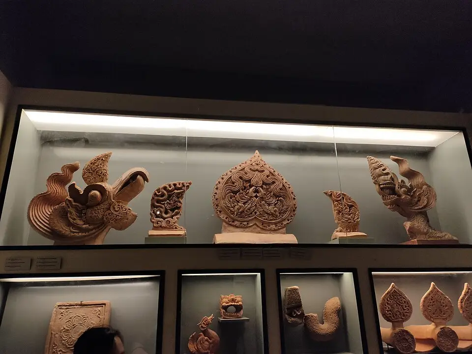
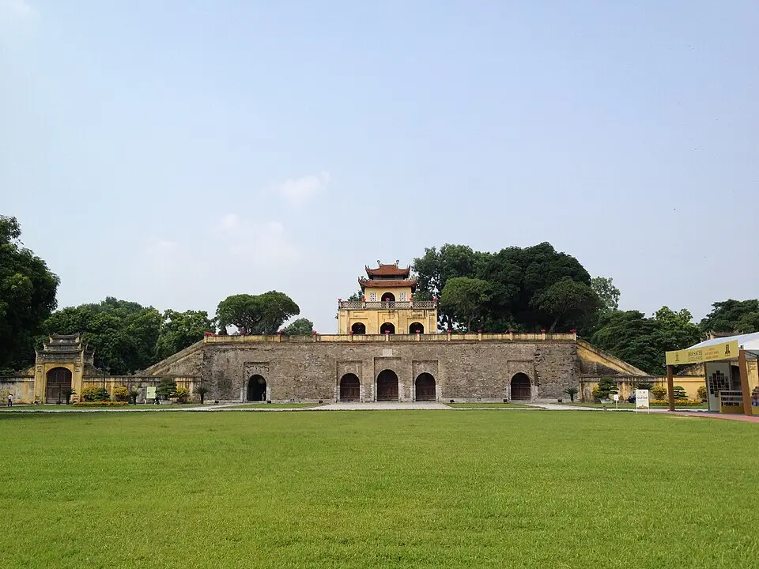

18 Hoàng Diệu: định xây nhà Quốc hội, gặp cung điện nhà Lý
Năm 2002, các nhà khảo cổ đào thăm dò khu đất định xây nhà Quốc hội mới ở Ba Đình. Dưới lòng đất là móng cung điện nhà Lý, rồi Trần, Lê chồng lên nhau, sâu nhất là dấu vết thành Đại La thời Đường.

Suốt hai trăm năm, người Hà Nội chỉ biết Hoàng thành Thăng Long qua sách. Trên mặt đất còn lại rất ít: Đoan Môn, Cửa Bắc, Cột cờ, thềm điện Kính Thiên. Năm 2002, các nhà khảo cổ được phép đào ở khu đất số 18 Hoàng Diệu, nơi định xây nhà Quốc hội mới. Những gì họ thấy dưới lòng đất đã làm thay đổi kế hoạch ấy.
Vì sao cung điện biến mất
Năm 866, tướng nhà Đường Cao Biền cho đắp thành Đại La ở vùng đất này. Năm 1010, vua Lý Thái Tổ dời đô về đây, đặt tên Thăng Long. Các triều Lý, Trần, Lê tiếp tục xây, sửa, mở rộng. Kinh thành có ba vòng: La thành ngoài cùng, Hoàng thành ở giữa, trong cùng là Tử Cấm thành.
Rồi kinh đô rời đi. Năm 1802, nhà Nguyễn đóng đô ở Huế và lấy nhiều vật liệu từ Thăng Long đem vào. Năm 1805, vua Gia Long cho thu nhỏ thành, xây lại theo kiểu Vauban. Năm 1835, vua Minh Mạng cho xén bớt thành vì cho rằng thành Hà Nội không được cao hơn kinh thành Huế. Năm 1848, vua Tự Đức cho dỡ các cung điện thời Lê còn lại, đưa đồ chạm khắc về Huế. Cuối thế kỷ 19, người Pháp phá gần hết thành để làm công sở và trại lính.
Hố đào ở 18 Hoàng Diệu cho thấy lịch sử chồng lên nhau như các trang sách.
Những gì nằm dưới đất


Hố đào ở 18 Hoàng Diệu cho thấy lịch sử chồng lên nhau như các trang sách. Tầng dưới cùng là dấu vết thành Đại La. Trên đó là cung điện thời Lý và Trần. Tiếp theo là một phần Đông Cung thời Lê. Trên cùng là thành tỉnh Hà Nội thế kỷ 19.
Ở tầng Lý, các nhà khảo cổ tìm thấy những ô sỏi vuông, mỗi cạnh khoảng 1,3 m, nện chặt với đất sét làm móng cho chân cột. Có 40 ô như vậy, xếp thành bốn hàng. Từ đó họ dựng lại được hình dáng một tòa nhà gỗ ít nhất chín gian, mỗi gian rộng khoảng 6 m, rộng hơn các kiến trúc gỗ cổ còn đứng đến nay. Quanh đó là giếng, rãnh thoát nước xếp bằng gạch chuyên dụng, gạch in hoa, tượng rồng và phượng mang phong cách thời Lý.
Nhà Quốc hội dời chỗ
Phát hiện này mở ra một cuộc tranh luận lớn: tiếp tục xây nhà Quốc hội trên khu đất, hay bảo tồn di tích. Năm 2004, Bộ Quốc phòng chuyển khỏi khu trung tâm để di tích được giữ gìn. Nhà Quốc hội cuối cùng được xây ở chỗ hội trường Ba Đình cũ, khởi công năm 2009, ngay cạnh khu khảo cổ. Khi dỡ hội trường Ba Đình năm 2008, người ta lại tìm thấy thêm dấu tích kiến trúc. Một phần được giữ lại và trưng bày dưới tầng hầm tòa nhà mới.
Di sản thế giới
Ngày 31 tháng 7 năm 2010, ở phiên họp tại Brasil, UNESCO công nhận Khu trung tâm Hoàng thành Thăng Long là Di sản thế giới. Đó là năm Thăng Long tròn một nghìn năm tuổi. Vùng di sản gồm khu khảo cổ 18 Hoàng Diệu và khu thành cổ với những công trình còn đứng.
Cho đến nay, mới chỉ một phần nhỏ của Thăng Long được khai quật. Phần lớn kinh thành nghìn năm vẫn nằm dưới phố xá Hà Nội hôm nay, và chưa ai biết chắc dưới đó còn những gì.